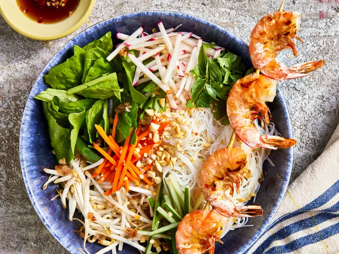

Vermicelli Noodle Bowl

Description
This vermicelli bowl combines fresh herbs, rice vermicelli noodles, cucumber, bean sprouts, and grilled shrimp. Tossed with a tangy sweet-and-sour sauce, it's a simple and satisfying dinner that's perfect for hot weather.
Ingredients
- 2 tablespoons lime juice
- 1 clove garlic, minced
- ¼ teaspoon red pepper flakes
- ½ teaspoon canola oil
- 2 tablespoons chopped shallots
- 2 skewers
- 8 medium shrimp, with shells
- 1 (8 ounce) package rice vermicelli noodles
- 1 cup bean sprouts
Steps
- Whisk vinegar, fish sauce, sugar, lime juice, garlic, and red pepper flakes together in a small bowl; set sauce aside.
- Heat oil in a small skillet over medium heat. Add shallots; cook and stir until softened and lightly caramelized, about 8 minutes.
- Preheat an outdoor grill for medium heat and lightly oil the grate. Skewer 4 shrimp on each skewer and grill until they turn pink and are charred on the outside, 1 to 2 minutes per side. Set aside.
- Bring a large pot of water to a boil. Add vermicelli noodles and cook until softened, 12 minutes. Drain noodles and rinse with cold water, stirring to separate noodles.
- Assemble vermicelli bowl by placing cooked noodles in one half of each serving bowl; place lettuce and bean sprouts in the other half. Top each bowl with cucumbers, carrots, daikon, peanuts, cilantro, Thai basil, mint, and caramelized shallots. Serve with shrimp skewers and sauce on the side. Pour sauce on top and toss thoroughly to coat before eating.